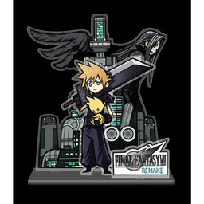
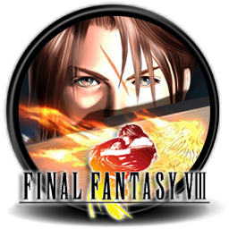
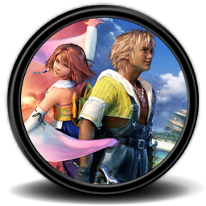
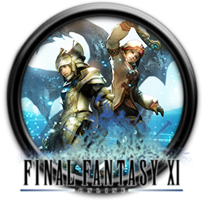
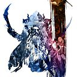

About me
Hypertext Challenge
My Course Details
My Course:
Web Design and Development
A Very Important Heading
Module Website
Web Tech
is a module that is run in the
School of Computing
at
Edinburgh Napier University

Final Fantasy 7

Final Fantasy 8
Final Fantasy 9

Final Fantasy X

Final Fantasy XI

Final Fantasy XII